Chapter 8.4 ~ 8.8 이중차분법#
작성자 : 박상호
패널데이터에서는 특정 시점에서 처치가 이루어지기 전과 후를 비교하여 처치의 효과를 알고자 한다.
8.4 시간에 따른 효과 변동#
처치효과가 즉각적이지 않은 경우가 있다. 이 경우에는 시간에 따른 ATT를 추정한다.
mkt_data 셋
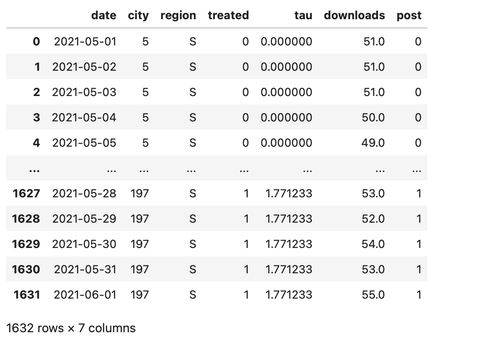
파이썬 함수
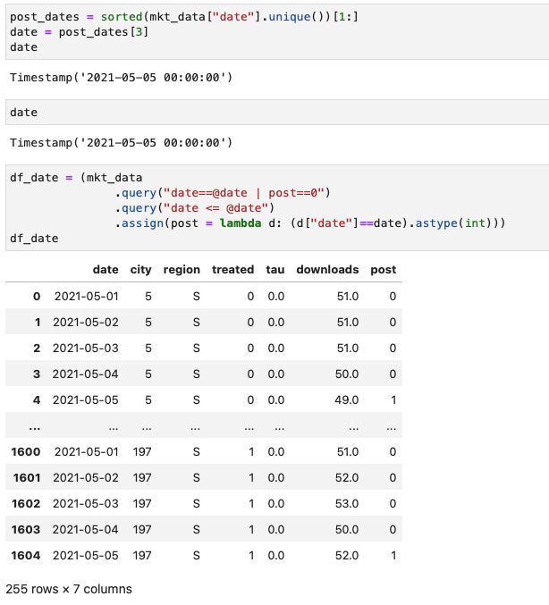
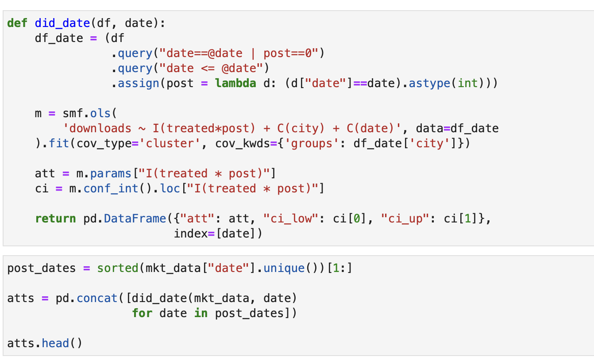
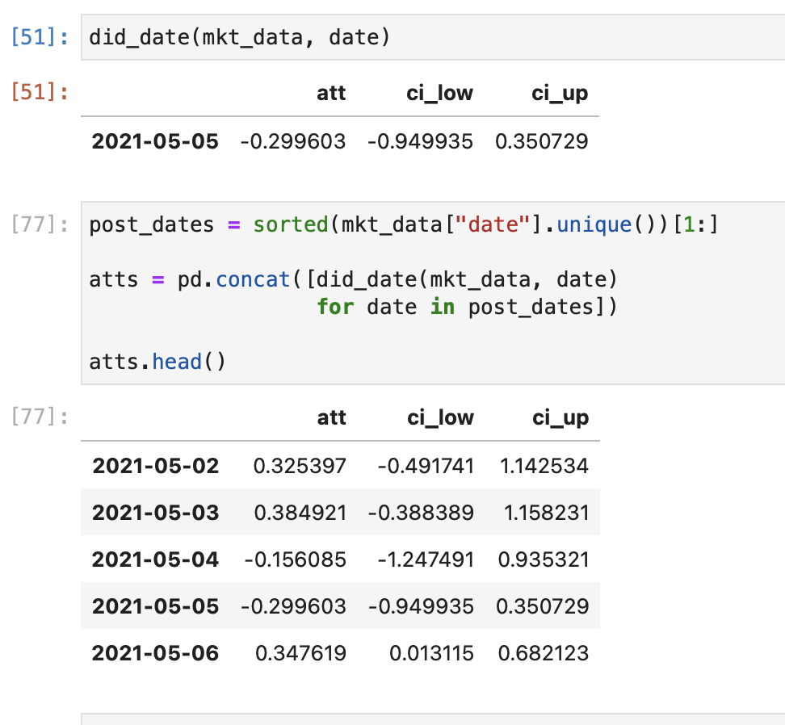
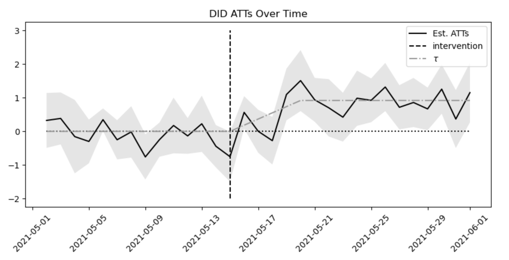
처치는 15일에 이루어졌으나 효과가 바로 나타나지는 않음.
8.5 이중차분법과 공변량#
모델에 처치 전의 공변량을 포함했을 때 데이터가 평행 추세 가정을 만족하는 경우에 유용하게 사용할 수 있다.
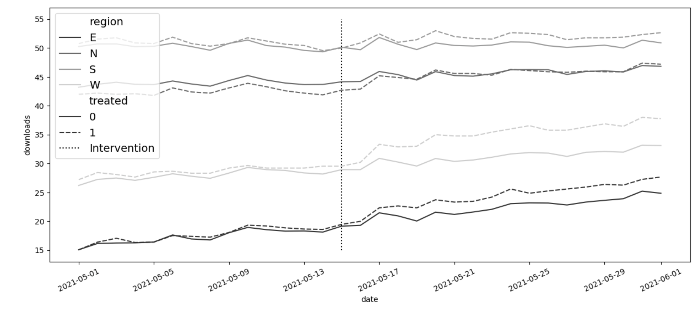
편향 문제를 해결하기 위해 각 지역별 서로 다른 추세를 반드시 고려해야 한다. 해결 방법 중에 각 지역별 별도의 DID 회귀 모델을 적용하는 것이다. 전체 이중차분법 모델을 지역 더미변수와 상호작용한다. 이로써 true ATE 1.72와 거의 비슷한 값을 얻게 된다.
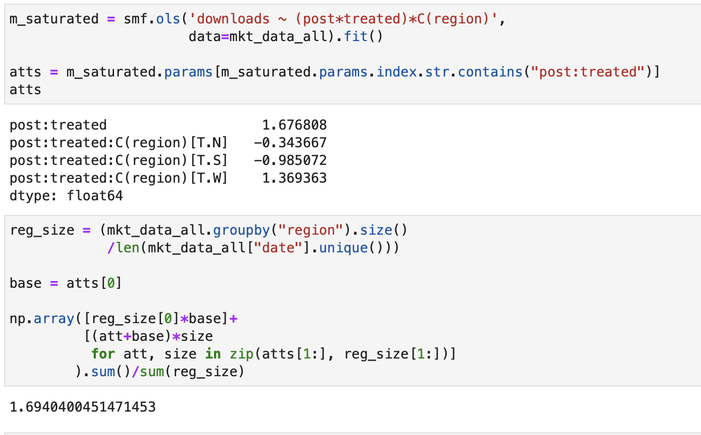
하지만 공변량이 많거나 연속형일 경우에 실용적이지 않다. 지역변수를 처치 여부 및 처치 후 더미변수 모두와 상호작용하는 대신, 처치 후 더미변수와 상호작용하면 된다. 이 모델은 각 지역 실험군의 추세(처치 전후 결과 수준)를 별도로 추정하지만, 실험군과 처치 후 기간에 대해서는 단일 절편 이동을 적합시킨다.
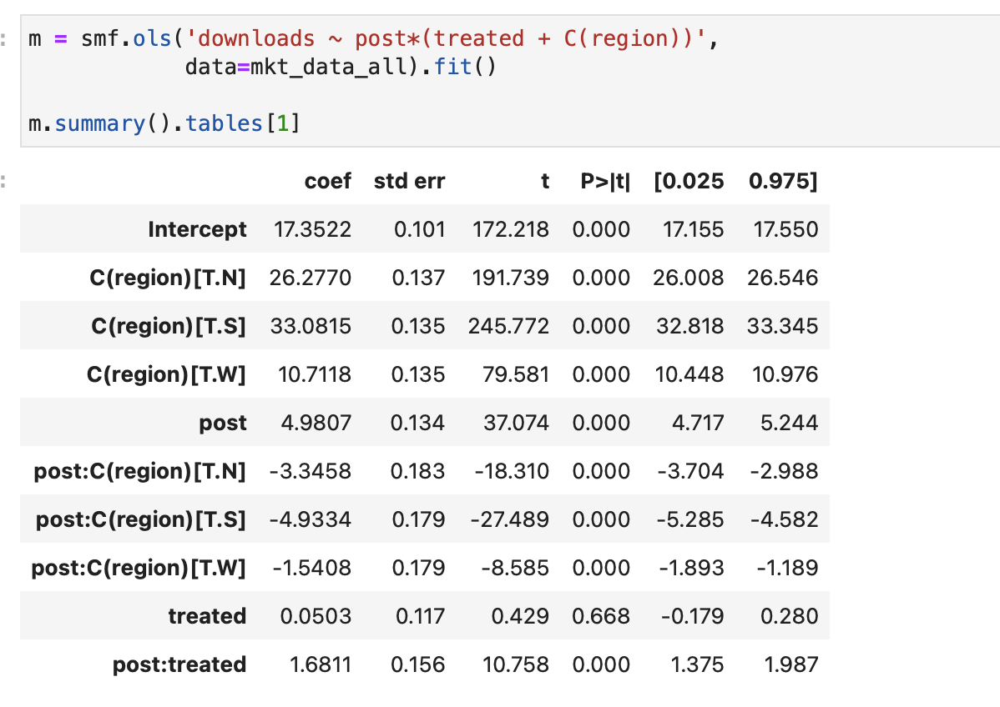
post::treated의 coef가 ATT이다. 이 값은 이전에 추정한 ATT와 꽤 비슷하다. 차이가 약간 나타나는 이유는 회귀분석에서 표본 크기가 아닌 분산에 따라 평균을 구하기 때문이다. 이 모형은 실행속도가 빠르지만, 상호작용하는 부분에서 신중해야 한다.
8.6 이중 강건 이중차분법#
이중 강건 이중차분법은 이중 강건 추정량의 아이디어를 활용한다. 이중차분법은 결과 변화량인 \(\Delta y\)와 관련이 있으므로 시간에 따른 델타 결과 모델이 필요하다. 그리고 ATT에만 관심이 있으므로 대조군을 바탕으로 실험군을 재구성해야 한다.
8.6.1 성향점수 모델#
처치 전 공변량을 활용하여 실험 대상이 실험군에 속할 확률을 추정하는 성향점수 모델 \(\hat{e}(x)\)이다. 이 모델을 시간 차원을 고려하지 않으므로 한 시점의 데이터만 있으면 된다.
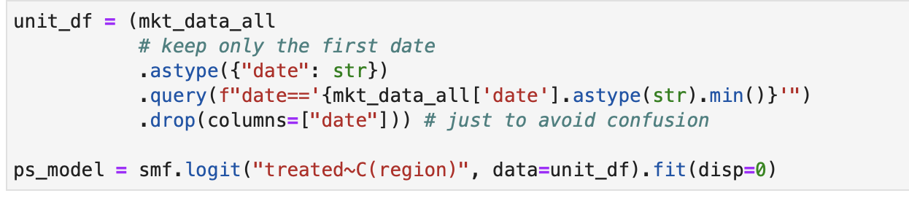
8.6.2 델타 결과 모델#
처치 전후 기간의 평균 결과 차이를 계산한다.
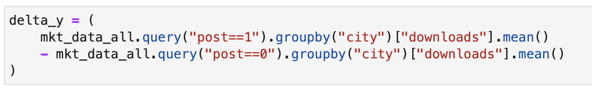
평균 결과 차이와 실험 대상에 대해 회귀한다.
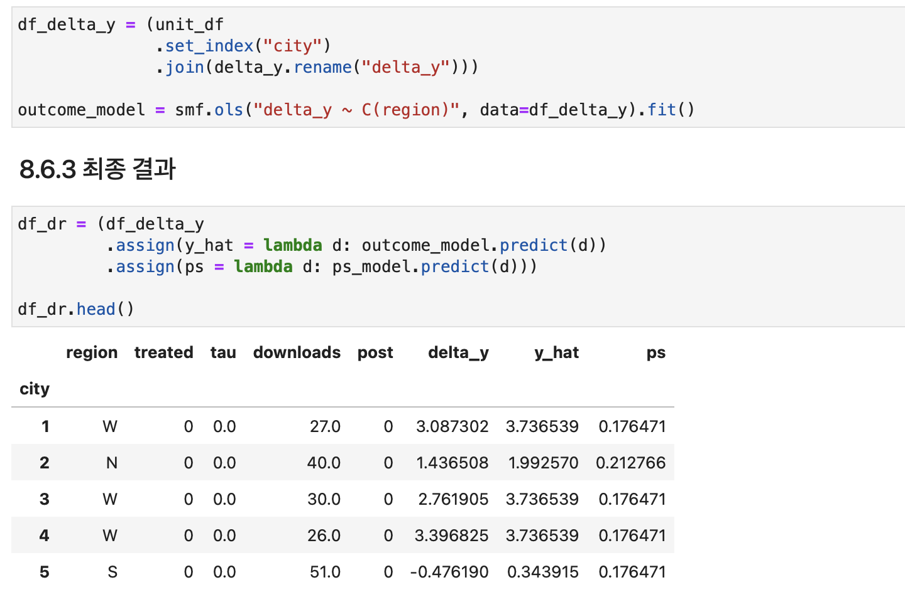
우리가 구하고자 하는 ATT는 다음과 같다.
\(\hat{\tau}_{DRDID}=\widehat{\Delta y_1}^{DR}-\widehat{\Delta y_0}^{DR}\)
\(\widehat{\Delta y_1}^{DR} = 1/N_{tr} \Sigma_{i \in tr}(\Delta y - \hat{m}(x))\)
대조군 하에서의 전체 모집단에서는 \(1/(1-\hat{e}(x))\) 가중치를 사용한다.
\(w_{co} = \hat{e}(X) \frac{1}{1-\hat{e}(X)}\)
가중치를 정의했으면 이를 사용하여
\(\widehat{\Delta y_0}^{DR}=\Sigma_{i \in tr}w_{co}(\Delta y - \hat{m}(x))/\Sigma w_{co}\)
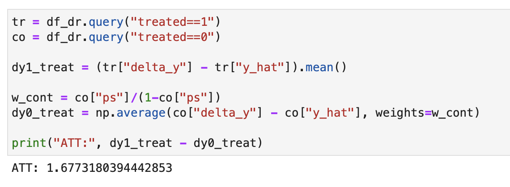
이 추정값은 실제 ATT 및 이전에 이중차분법에 공변량을 추가했을 때 얻은 ATT와 매우 비슷하다. 이중 강건 이중차분법은 성향점수 모델이나 결과 모델 중 하나만 정확해도 잘 작동한다.
8.7 처치의 시차 도입#
만약 실험 대상이 서로 다른 시점에 처치 받는다면 다른 방법론을 고려해야 한다. 처치에 대한 시차 도입 설계는 여러 실험 그룹(\(G\)로 표기)이 있고 각 그룹이 다른 시점에 처치를 받거나 전혀 받지 않는 구조이다. 이때 처치 받는 시점이 그룹을 구분하는 기준이므로, 이들을 코호트라고 부른다. 즉, \(t\) 시점에 처치 받는 그룹 \(G\)를 코호트 \(G_t\)라고 한다.
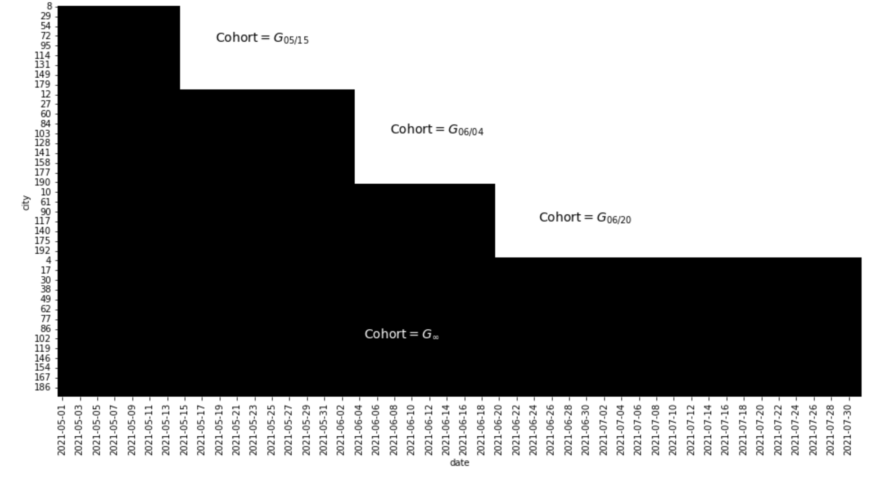
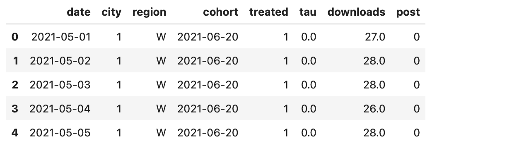
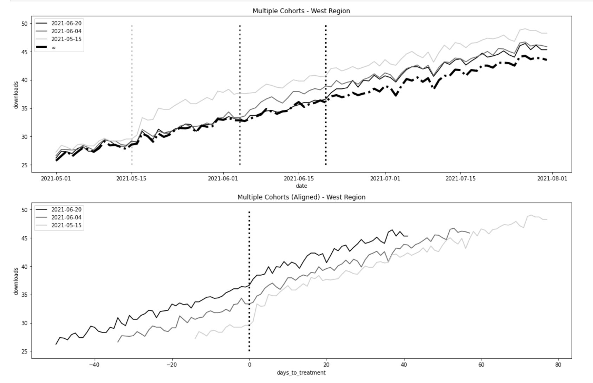
평행 추세 가정을 잘 만족하지만, ATT를 이중차분법으로 찾기는 어렵다.
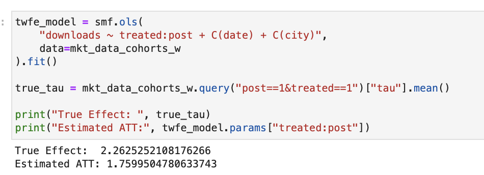
이중차분법 가정에 더해 시차 도입에서는 시간에 걸쳐 효과가 동일하다는 가정이 있어야 한다. 그러나 여기서는 효과가 나타나기까지는 일정 시간이 걸린다. 그리고 미리 처치를 받은 코호트를 대조군으로 하여 늦은 처치를 받은 코호트의 효과를 추정할 때 문제가 생긴다.
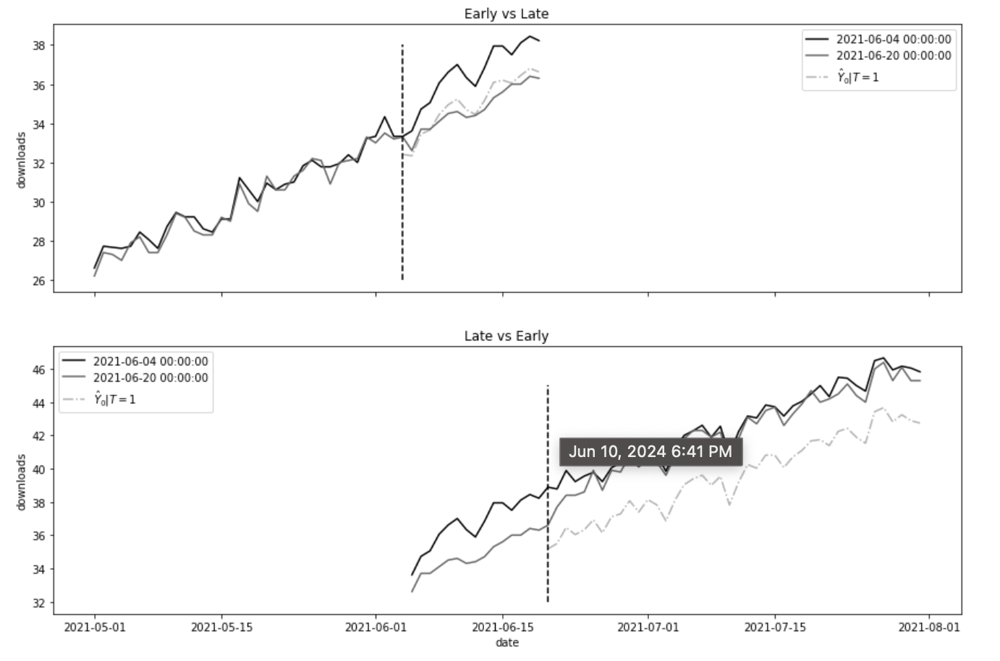
8.7.1 시간에 따른 이질적 효과#
코호트별로 효과를 변하도록 하여 구한다.
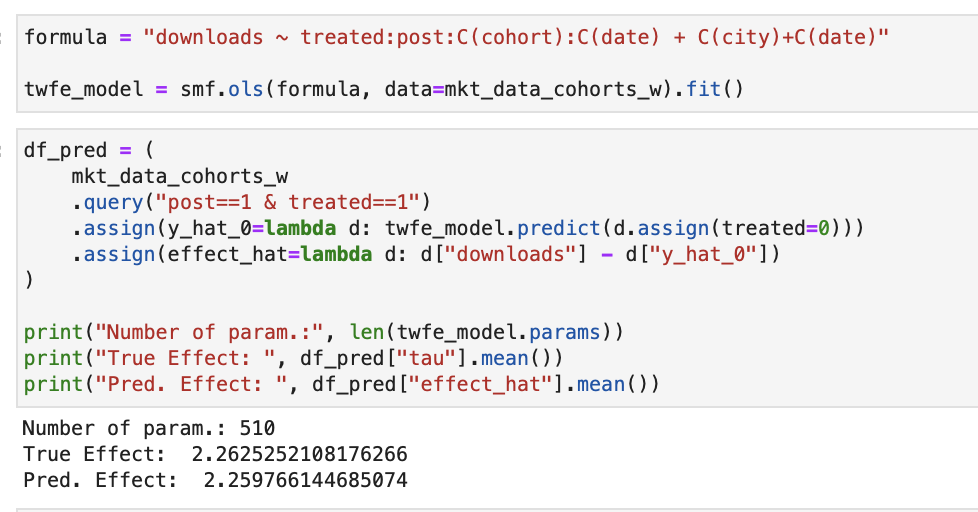
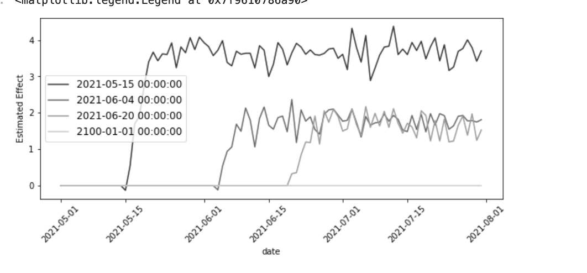
여러 개의 2*2 이중차분법으로 나누고 각각을 개별적으로 계산한 후 결과를 합치는 방법도 있다.
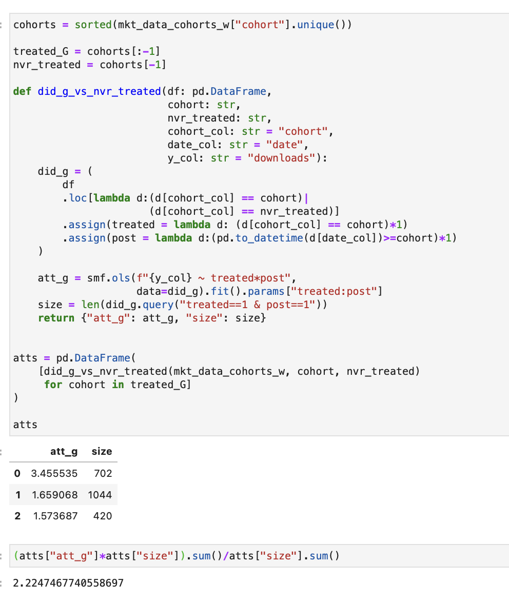
코호트의 표본크기를 이용하여 가중평균을 구한다. 혹은 처치를 전혀 받지 않은 대상을 대조군으로 사용하는 대신에 아직 처치 받지 않은 대상을 사용함으로써 대조군의 표본 크기를 늘릴 수 있다.
8.7.2 공변량#
DID 모델에 공변량을 추가하기 위해, 공변량과 처치 후 더미변수를 상호작용시킨다. 시간의 경과를 표시하는 날짜열은 처치 후 더미변수와 유사하다고 볼 수 있으므로 공변량을 해당 날짜 열과 상호작용시킨다.
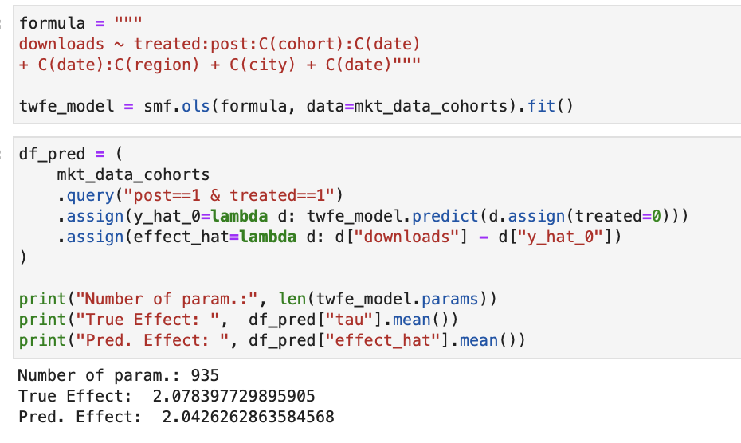